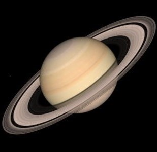
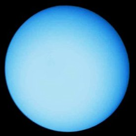
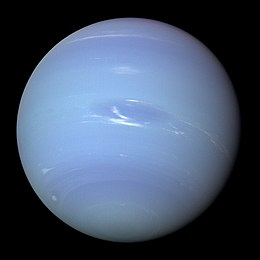
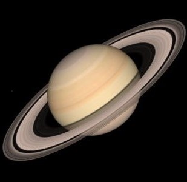
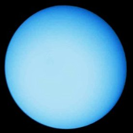
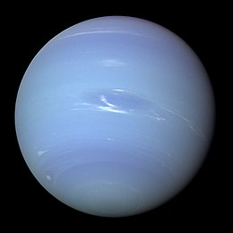

I quattro giganti gassosi esterni collettivamente costituiscono il 99% della massa nota in orbita attorno al Sole. Giove e Saturno sono costituiti prevalentemente da idrogeno ed elio; Urano e Nettuno possiedono una percentuale maggiore di ghiaccio. Alcuni astronomi suggeriscono che appartengono a un'altra categoria, quella dei "giganti di ghiaccio". Tutti e quattro i giganti gassosi possiedono degli anelli.
 




